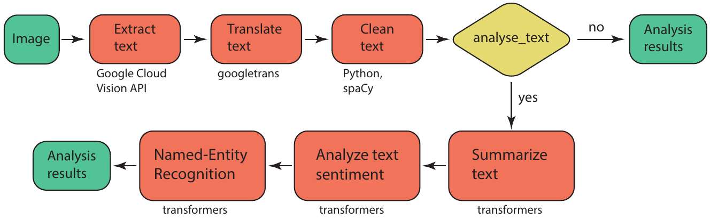
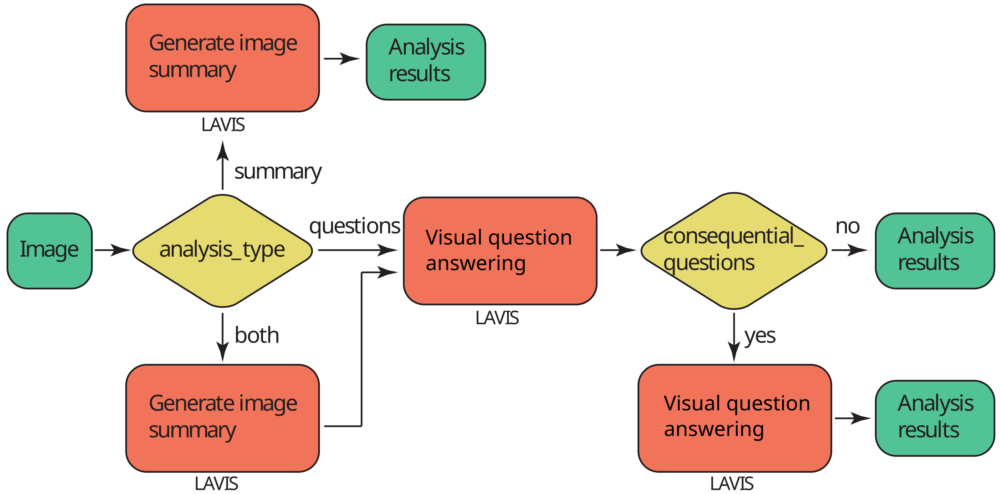
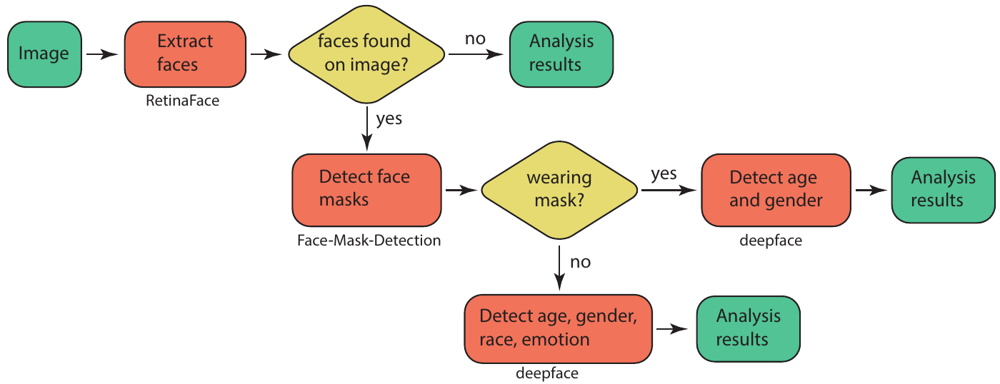

AMMICO Demonstration Notebook
pip install ammicopip install git+https://github.com/ssciwr/AMMICO.git[ ]:
# if running on google colab
# flake8-noqa-cell
if "google.colab" in str(get_ipython()):
# update python version
# install setuptools
# %pip install setuptools==61 -qqq
# uninstall some pre-installed packages due to incompatibility
%pip uninstall --yes tensorflow-probability dopamine-rl lida pandas-gbq torchaudio torchdata torchtext orbax-checkpoint flex-y -qqq
# install ammico
%pip install git+https://github.com/ssciwr/ammico.git -qqq
# mount google drive for data and API key
from google.colab import drive
drive.mount("/content/drive")
Use a test dataset
You can download a dataset for test purposes. Skip this step if you use your own data.
[ ]:
from datasets import load_dataset
from pathlib import Path
# If the dataset is gated/private, make sure you have run huggingface-cli login
dataset = load_dataset("iulusoy/test-images")
Next you need to provide a path for the saved images - a folder where the data is stored locally. This directory is automatically created if it does not exist.
[ ]:
data_path = "./data-test"
data_path = Path(data_path)
data_path.mkdir(parents=True, exist_ok=True)
# now save the files from the Huggingface dataset as images into the data_path folder
for i, image in enumerate(dataset["train"]["image"]):
filename = "img" + str(i) + ".png"
image.save(data_path / filename)
Import the ammico package.
[ ]:
import os
import ammico
# for displaying a progress bar
from tqdm import tqdm
Sometimes you may need to restart a session after installing the correct versions of packages, because Tensorflow and EmotitionDetector may not work and give an error. You can check it by running this code:
import tensorflow as tf
tf.ones([2, 2])
If this code generates an error, you need to restart session. For this please click Runtime -> Restart session. And rerun the notebook again. All required packages will already be installed, so the execution will be very fast.
Step 0: Create and set a Google Cloud Vision Key
Please note that for the Google Cloud Vision API (the TextDetector class) you need to set a key in order to process the images. A key is generated following these instructions. This key is ideally set as an environment variable using for example
os.environ[
"GOOGLE_APPLICATION_CREDENTIALS"
] = "/content/drive/MyDrive/misinformation-data/misinformation-campaign-981aa55a3b13.json"
where you place the key on your Google Drive if running on colab, or place it in a local folder on your machine.
[ ]:
# os.environ["GOOGLE_APPLICATION_CREDENTIALS"] = "/content/drive/MyDrive/misinformation-data/misinformation-campaign-981aa55a3b13.json"
Step 1: Read your data into AMMICO
The ammico package reads in one or several input files given in a folder for processing. The user can select to read in all image files in a folder, to include subfolders via the recursive option, and can select the file extension that should be considered (for example, only “jpg” files, or both “jpg” and “png” files). For reading in the files, the ammico function find_files is used, with optional keywords:
input key |
input type |
possible input values |
|---|---|---|
|
|
the directory containing the image files (defaults to the location set by environment variable |
|
|
the file extensions to consider (defaults to “png”, “jpg”, “jpeg”, “gif”, “webp”, “avif”, “tiff”) |
|
|
include subdirectories recursively (defaults to |
|
|
maximum number of files to read (defaults to |
|
|
the random seed for shuffling the images; applies when only a few images are read and the selection should be preserved (defaults to |
The find_files function returns a nested dict that contains the file ids and the paths to the files and is empty otherwise. This dict is filled step by step with more data as each detector class is run on the data (see below).
If you downloaded the test dataset above, you can directly provide the path you already set for the test directory, data_path. The below cell is already set up for the test dataset.
If you use your own dataset, you need to toggle the path and provide the directory where you have saved your data.
[ ]:
image_dict = ammico.find_files(
# path="/content/drive/MyDrive/misinformation-data/",
path=data_path.as_posix(),
limit=15,
)
Step 2: Inspect the input files using the graphical user interface
A Dash user interface is to select the most suitable options for the analysis, before running a complete analysis on the whole data set. The options for each detector module are explained below in the corresponding sections; for example, different models can be selected that will provide slightly different results. This way, the user can interactively explore which settings provide the most accurate results. In the interface, the nested image_dict is passed through the AnalysisExplorer
class. The interface is run on a specific port which is passed using the port keyword; if a port is already in use, it will return an error message, in which case the user should select a different port number. The interface opens a dash app inside the Jupyter Notebook and allows selection of the input file in the top left dropdown menu, as well as selection of the detector type in the top right, with options for each detector type as explained below. The output of the detector is shown
directly on the right next to the image. This way, the user can directly inspect how updating the options for each detector changes the computed results, and find the best settings for a production run.
[ ]:
analysis_explorer = ammico.AnalysisExplorer(image_dict)
analysis_explorer.run_server(port=8055)
Step 3: Analyze all images
The analysis can be run in production on all images in the data set. Depending on the size of the data set and the computing resources available, this can take some time.
It is also possible to set the dump file creation dump_file in order to save the calculated data every dump_every images.
[ ]:
# dump file name
dump_file = "dump_file.csv"
# dump every N images
dump_every = 10
The desired detector modules are called sequentially in any order, for example the EmotionDetector:
[ ]:
for num, key in tqdm(enumerate(image_dict.keys()), total=len(image_dict)): # loop through all images
image_dict[key] = ammico.EmotionDetector(image_dict[key]).analyse_image() # analyse image with EmotionDetector and update dict
if num % dump_every == 0 or num == len(image_dict) - 1: # save results every dump_every to dump_file
image_df = ammico.get_dataframe(image_dict)
image_df.to_csv(dump_file)
TextDetector:
[ ]:
for num, key in tqdm(enumerate(image_dict.keys()), total=len(image_dict)): # loop through all images
image_dict[key] = ammico.TextDetector(image_dict[key], analyse_text=True).analyse_image() # analyse image with EmotionDetector and update dict
if num % dump_every == 0 | num == len(image_dict) - 1: # save results every dump_every to dump_file
image_df = ammico.get_dataframe(image_dict)
image_df.to_csv(dump_file)
For the computationally demanding SummaryDetector, it is best to initialize the model first and then analyze each image while passing the model explicitly. This can be done in a separate loop or in the same loop as for text and emotion detection.
[ ]:
# initialize the models
image_summary_detector = ammico.SummaryDetector(subdict = image_dict, analysis_type="summary", model_type="base")
# run the analysis without having to re-iniatialize the model
for num, key in tqdm(enumerate(image_dict.keys()),total=len(image_dict)): # loop through all images
image_dict[key] = image_summary_detector.analyse_image(subdict = image_dict[key], analysis_type="summary") # analyse image with SummaryDetector and update dict
if num % dump_every == 0 | num == len(image_dict) - 1: # save results every dump_every to dump_file
image_df = ammico.get_dataframe(image_dict)
image_df.to_csv(dump_file)
Or you can run all Detectors in one loop as for example:
[ ]:
# initialize the models
image_summary_detector = ammico.SummaryDetector(subdict = image_dict, analysis_type="summary", model_type="base")
for num, key in tqdm(enumerate(image_dict.keys()),total=len(image_dict)): # loop through all images
image_dict[key] = ammico.EmotionDetector(image_dict[key]).analyse_image() # analyse image with EmotionDetector and update dict
image_dict[key] = ammico.TextDetector(image_dict[key], analyse_text=True).analyse_image() # analyse image with TextDetector and update dict
image_dict[key] = image_summary_detector.analyse_image(subdict = image_dict[key], analysis_type="summary") # analyse image with SummaryDetector and update dict
if num % dump_every == 0 | num == len(image_dict) - 1: # save results every dump_every to dump_file
image_df = ammico.get_dataframe(image_dict)
image_df.to_csv(dump_file)
The nested dictionary will be updated from containing only the file id’s and paths to the image files, to containing all calculated image features.
Step 4: Convert analysis output to pandas dataframe and write csv
The content of the nested dictionary can then conveniently be converted into a pandas dataframe for further analysis in Python, or be written as a csv file:
[ ]:
image_df = ammico.get_dataframe(image_dict)
Inspect the dataframe:
[ ]:
image_df.head(3)
Or write to a csv file:
[ ]:
image_df.to_csv("/content/drive/MyDrive/misinformation-data/data_out.csv")
The detector modules
The different detector modules with their options are explained in more detail in this section. ## Text detector Text on the images can be extracted using the TextDetector class (text module). The text is initally extracted using the Google Cloud Vision API and then translated into English with googletrans. The translated text is cleaned of whitespace, linebreaks, and numbers using Python syntax and spaCy.

The user can set if the text should be further summarized, and analyzed for sentiment and named entity recognition, by setting the keyword analyse_text to True (the default is False). If set, the transformers pipeline is used for each of these tasks, with the default models as of 03/2023. Other models can be selected by setting the optional keyword model_names to a list of selected models, on for each task:
model_names=["sshleifer/distilbart-cnn-12-6", "distilbert-base-uncased-finetuned-sst-2-english", "dbmdz/bert-large-cased-finetuned-conll03-english"] for summary, sentiment, and ner. To be even more specific, revision numbers can also be selected by specifying the optional keyword revision_numbers to a list of revision numbers for each model, for example revision_numbers=["a4f8f3e", "af0f99b", "f2482bf"].
Please note that for the Google Cloud Vision API (the TextDetector class) you need to set a key in order to process the images. This key is ideally set as an environment variable using for example
[ ]:
# os.environ["GOOGLE_APPLICATION_CREDENTIALS"] = "/content/drive/MyDrive/misinformation-data/misinformation-campaign-981aa55a3b13.json"
where you place the key on your Google Drive if running on colab, or place it in a local folder on your machine.
Summarizing, the text detection is carried out using the following method call and keywords, where analyse_text, model_names, and revision_numbers are optional:
[ ]:
for num, key in tqdm(enumerate(image_dict.keys()), total=len(image_dict)): # loop through all images
image_dict[key] = ammico.TextDetector(image_dict[key], # analyse image with TextDetector and update dict
analyse_text=True, model_names=["sshleifer/distilbart-cnn-12-6",
"distilbert-base-uncased-finetuned-sst-2-english",
"dbmdz/bert-large-cased-finetuned-conll03-english"],
revision_numbers=["a4f8f3e", "af0f99b", "f2482bf"]).analyse_image()
if num % dump_every == 0 | num == len(image_dict) - 1: # save results every dump_every to dump_file
image_df = ammico.get_dataframe(image_dict)
image_df.to_csv(dump_file)
The models can be adapted interactively in the notebook interface and the best models can then be used in a subsequent analysis of the whole data set.
A detailed description of the output keys and data types is given in the following table.
output key |
output type |
output value |
|---|---|---|
|
|
the extracted text in the original language |
|
|
the detected dominant language of the extracted text |
|
|
the text translated into English |
|
|
the text after cleaning from numbers and unrecognizable words |
|
|
the summary of the text, generated with a transformers model |
|
|
the detected sentiment, generated with a transformers model |
|
|
the confidence associated with the predicted sentiment |
|
|
the detected named entities, generated with a transformers model |
|
|
the detected entity type |
Image summary and query
The SummaryDetector can be used to generate image captions (summary) as well as visual question answering (VQA).

This module is based on the LAVIS library. Since the models can be quite large, an initial object is created which will load the necessary models into RAM/VRAM and then use them in the analysis. The user can specify the type of analysis to be performed using the analysis_type keyword. Setting it to summary will generate a caption (summary), questions will prepare answers (VQA) to a list of questions as set by the user,
summary_and_questions will do both. Note that the desired analysis type needs to be set here in the initialization of the detector object, and not when running the analysis for each image; the same holds true for the selected model.
The implemented models are listed below.
input model name |
model |
|---|---|
base |
BLIP image captioning base, ViT-B/16, pretrained on COCO dataset |
large |
BLIP image captioning large, ViT-L/16, pretrained on COCO dataset |
vqa |
BLIP base model fine-tuned on VQA v2.0 dataset |
blip2_t5_pretrain_flant5xxl |
BLIP2 pretrained on FlanT5XXL |
blip2_t5_pretrain_flant5xl |
BLIP2 pretrained on FlanT5XL |
blip2_t5_caption_coco_flant5xl |
BLIP2 pretrained on FlanT5XL, fine-tuned on COCO |
blip2_opt_pretrain_opt2.7b |
BLIP2 pretrained on OPT-2.7b |
blip2_opt_pretrain_opt6.7b |
BLIP2 pretrained on OPT-6.7b |
blip2_opt_caption_coco_opt2.7b |
BLIP2 pretrained on OPT-2.7b, fine-tuned on COCO |
blip2_opt_caption_coco_opt6.7b |
BLIP2 pretrained on OPT-6.7b, fine-tuned on COCO |
Please note that base, large and vqa models can be run on the base TPU video card in Google Colab. To run any advanced BLIP2 models you need more than 20 gb of video memory, so you need to connect a paid A100 in Google Colab.
First of all, we can run only the summary module analysis_type. You can choose a base or a large model_type.
[ ]:
image_summary_detector = ammico.SummaryDetector(image_dict, analysis_type="summary", model_type="base")
[ ]:
for num, key in tqdm(enumerate(image_dict.keys()),total=len(image_dict)):
image_dict[key] = image_summary_detector.analyse_image(subdict = image_dict[key], analysis_type="summary")
if num % dump_every == 0 | num == len(image_dict) - 1:
image_df = ammico.get_dataframe(image_dict)
image_df.to_csv(dump_file)
For VQA, a list of questions needs to be passed when carrying out the analysis; these should be given as a list of strings.
[ ]:
list_of_questions = [
"How many persons on the picture?",
"Are there any politicians in the picture?",
"Does the picture show something from medicine?",
]
If you want to execute only the VQA module without captioning, just specify the analysis_type as questions and model_type as vqa.
[ ]:
image_summary_vqa_detector = ammico.SummaryDetector(image_dict, analysis_type="questions",
model_type="vqa")
for num, key in tqdm(enumerate(image_dict.keys()),total=len(image_dict)):
image_dict[key] = image_summary_vqa_detector.analyse_image(subdict=image_dict[key],
analysis_type="questions",
list_of_questions = list_of_questions)
if num % dump_every == 0 | num == len(image_dict) - 1:
image_df = ammico.get_dataframe(image_dict)
image_df.to_csv(dump_file)
Or you can specify the analysis type as summary_and_questions, then both caption creation and question answers will be generated for each image. In this case, you can choose a base or a large model_type.
[ ]:
image_summary_vqa_detector = ammico.SummaryDetector(image_dict, analysis_type="summary_and_questions",
model_type="base")
for num, key in tqdm(enumerate(image_dict.keys()),total=len(image_dict)):
image_dict[key] = image_summary_vqa_detector.analyse_image(subdict=image_dict[key],
analysis_type="summary_and_questions",
list_of_questions = list_of_questions)
if num % dump_every == 0 | num == len(image_dict) - 1:
image_df = ammico.get_dataframe(image_dict)
image_df.to_csv(dump_file)
The output is given as a dictionary with the following keys and data types:
output key |
output type |
output value |
|---|---|---|
|
|
when |
|
|
when |
a user-defined input question |
|
when |
BLIP2 models
The BLIP2 models are computationally very heavy models, and require approximately 60GB of RAM. These models can easily use more than 20GB GPU memory.
[ ]:
obj = ammico.SummaryDetector(subdict=image_dict, analysis_type = "summary_and_questions", model_type = "blip2_t5_caption_coco_flant5xl")
# list of the new models that can be used:
# "blip2_t5_pretrain_flant5xxl",
# "blip2_t5_pretrain_flant5xl",
# "blip2_t5_caption_coco_flant5xl",
# "blip2_opt_pretrain_opt2.7b",
# "blip2_opt_pretrain_opt6.7b",
# "blip2_opt_caption_coco_opt2.7b",
# "blip2_opt_caption_coco_opt6.7b",
# You can use `pretrain_` model types for zero-shot image-to-text generation with prompts.
# Or you can use `caption_coco_`` model types to generate coco-style captions.
# `flant5` and `opt` means that the model equipped with FlanT5 and OPT LLMs respectively.
#also you can perform all calculation on cpu if you set device_type= "cpu" or gpu if you set device_type= "cuda"
You can also pass a list of questions to this cell if analysis_type="summary_and_questions" or analysis_type="questions". But the format of questions has changed in new models.
Here is an example of a list of questions:
[ ]:
list_of_questions = [
"Question: Are there people in the image? Answer:",
"Question: What is this picture about? Answer:",
]
[ ]:
for key in image_dict:
image_dict[key] = obj.analyse_image(subdict = image_dict[key], analysis_type="questions", list_of_questions=list_of_questions)
# analysis_type can be
# "summary",
# "questions",
# "summary_and_questions".
You can also pass a question with previous answers as context into this model and pass in questions like this one to get a more accurate answer:
You can combine as many questions as you want in a single query as a list.
[ ]:
list_of_questions = [
"Question: What country is in the picture? Answer: USA. Question: Why? Answer: Because there is an American flag in the background . Question: Where it comes from? Answer:",
"Question: Which city is this? Answer: Frankfurt. Question: Why?",
]
[ ]:
for key in image_dict:
image_dict[key] = obj.analyse_image(subdict = image_dict[key], analysis_type="questions", list_of_questions=list_of_questions)
[ ]:
image_dict
You can also ask sequential questions if you pass the argument cosequential_questions=True. This means that the answers to previous questions will be passed as context to the next question. However, this method will work a bit slower, because for each image the answers to the questions will not be calculated simultaneously, but sequentially.
[ ]:
list_of_questions = [
"Question: Is this picture taken inside or outside? Answer:",
"Question: Why? Answer:",
]
[ ]:
for key in image_dict:
image_dict[key] = obj.analyse_image(subdict = image_dict[key], analysis_type="questions", list_of_questions=list_of_questions, consequential_questions=True)
[ ]:
image_dict
Detection of faces and facial expression analysis
Faces and facial expressions are detected and analyzed using the EmotionDetector class from the faces module. Initially, it is detected if faces are present on the image using RetinaFace, followed by analysis if face masks are worn (Face-Mask-Detection). The detection of age, gender, race, and emotions is carried out with deepface.

Depending on the features found on the image, the face detection module returns a different analysis content: If no faces are found on the image, all further steps are skipped and the result "face": "No", "multiple_faces": "No", "no_faces": 0, "wears_mask": ["No"], "age": [None], "gender": [None], "race": [None], "emotion": [None], "emotion (category)": [None] is returned. If one or several faces are found, up to three faces are analyzed if they are partially concealed by a face mask. If
yes, only age and gender are detected; if no, also race, emotion, and dominant emotion are detected. In case of the latter, the output could look like this: "face": "Yes", "multiple_faces": "Yes", "no_faces": 2, "wears_mask": ["No", "No"], "age": [27, 28], "gender": ["Man", "Man"], "race": ["asian", None], "emotion": ["angry", "neutral"], "emotion (category)": ["Negative", "Neutral"], where for the two faces that are detected (given by no_faces), some of the values are returned as a list
with the first item for the first (largest) face and the second item for the second (smaller) face (for example, "emotion" returns a list ["angry", "neutral"] signifying the first face expressing anger, and the second face having a neutral expression).
The emotion detection reports the seven facial expressions angry, fear, neutral, sad, disgust, happy and surprise. These emotions are assigned based on the returned confidence of the model (between 0 and 1), with a high confidence signifying a high likelihood of the detected emotion being correct. Emotion recognition is not an easy task, even for a human; therefore, we have added a keyword emotion_threshold signifying the % value above which an emotion is counted as being detected. The
default is set to 50%, so that a confidence above 0.5 results in an emotion being assigned. If the confidence is lower, no emotion is assigned.
From the seven facial expressions, an overall dominating emotion category is identified: negative, positive, or neutral emotion. These are defined with the facial expressions angry, disgust, fear and sad for the negative category, happy for the positive category, and surprise and neutral for the neutral category.
A similar threshold as for the emotion recognition is set for the race detection, race_threshold, with the default set to 50% so that a confidence for the race above 0.5 only will return a value in the analysis.
Summarizing, the face detection is carried out using the following method call and keywords, where emotion_threshold and race_threshold are optional:
[ ]:
for key in image_dict.keys():
image_dict[key] = ammico.EmotionDetector(image_dict[key], emotion_threshold=50, race_threshold=50).analyse_image()
The thresholds can be adapted interactively in the notebook interface and the optimal value can then be used in a subsequent analysis of the whole data set.
The output keys that are generated are
output key |
output type |
output value |
|---|---|---|
|
|
if a face is detected |
|
|
if multiple faces are detected |
|
|
the number of detected faces |
|
|
if each of the detected faces wears a face covering, up to three faces |
|
|
the detected age, up to three faces |
|
|
the detected gender, up to three faces |
|
|
the detected race, up to three faces, if above the confidence threshold |
|
|
the detected emotion, up to three faces, if above the confidence threshold |
|
|
the detected emotion category (positive, negative, or neutral), up to three faces, if above the confidence threshold |
Image Multimodal Search
This module shows how to carry out an image multimodal search with the LAVIS library.
Indexing and extracting features from images in selected folder
First you need to select a model. You can choose one of the following models: - blip - blip2 - albef - clip_base - clip_vitl14 - clip_vitl14_336
[ ]:
model_type = "blip"
# model_type = "blip2"
# model_type = "albef"
# model_type = "clip_base"
# model_type = "clip_vitl14"
# model_type = "clip_vitl14_336"
To process the loaded images using the selected model, use the below code:
[ ]:
my_obj = ammico.MultimodalSearch(image_dict)
[ ]:
(
model,
vis_processors,
txt_processors,
image_keys,
image_names,
features_image_stacked,
) = my_obj.parsing_images(
model_type,
path_to_save_tensors="/content/drive/MyDrive/misinformation-data/",
)
The images are then processed and stored in a numerical representation, a tensor. These tensors do not change for the same image and same model - so if you run this analysis once, and save the tensors giving a path with the keyword path_to_save_tensors, a file with filename .<Number_of_images>_<model_name>_saved_features_image.pt will be placed there.
This can save you time if you want to analyse same images with the same model but different questions. To run using the saved tensors, execute the below code giving the path and name of the tensor file. Any subsequent query of the model will run in a fraction of the time than it run in initially.
[ ]:
# uncomment the code below if you want to load the tensors from the drive
# and just want to ask different questions for the same set of images
# (
# model,
# vis_processors,
# txt_processors,
# image_keys,
# image_names,
# features_image_stacked,
# ) = my_obj.parsing_images(
# model_type,
# path_to_load_tensors="/content/drive/MyDrive/misinformation-data/5_clip_base_saved_features_image.pt",
# )
Here we already processed our image folder with 5 images and the clip_base model. So you need just to write the name 5_clip_base_saved_features_image.pt of the saved file that consists of tensors of all images as keyword argument for path_to_load_tensors.
Formulate your search queries
Next, you need to form search queries. You can search either by image or by text. You can search for a single query, or you can search for several queries at once, the computational time should not be much different. The format of the queries is as follows:
[ ]:
import importlib_resources # only require for image query example
image_example_query = str(importlib_resources.files("ammico") / "data" / "test-crop-image.png") # creating the path to the image for the image query example
search_query = [
{"text_input": "politician press conference"},
{"text_input": "a world map"},
{"text_input": "a dog"}, # This is how looks text query
{"image": image_example_query}, # This is how looks image query, here `image_example_path` is the path to query image like "data/test-crop-image.png"
]
You can filter your results in 3 different ways: - filter_number_of_images limits the number of images found. That is, if the parameter filter_number_of_images = 10, then the first 10 images that best match the query will be shown. The other images ranks will be set to None and the similarity value to 0. - filter_val_limit limits the output of images with a similarity value not bigger than filter_val_limit. That is, if the parameter filter_val_limit = 0.2, all images
with similarity less than 0.2 will be discarded. - filter_rel_error (percentage) limits the output of images with a similarity value not bigger than 100 * abs(current_simularity_value - best_simularity_value_in_current_search)/best_simularity_value_in_current_search < filter_rel_error. That is, if we set filter_rel_error = 30, it means that if the top1 image have 0.5 similarity value, we discard all image with similarity less than 0.35.
[ ]:
similarity, sorted_lists = my_obj.multimodal_search(
model,
vis_processors,
txt_processors,
model_type,
image_keys,
features_image_stacked,
search_query,
filter_number_of_images=20,
)
[ ]:
similarity
[ ]:
sorted_lists
After launching multimodal_search function, the results of each query will be added to the source dictionary.
[ ]:
image_dict
A special function was written to present the search results conveniently.
[ ]:
my_obj.show_results(
search_query[0], # you can change the index to see the results for other queries
)
[ ]:
my_obj.show_results(
search_query[3], # you can change the index to see the results for other queries
)
Improve the search results
For even better results, a slightly different approach has been prepared that can improve search results. It is quite resource-intensive, so it is applied after the main algorithm has found the most relevant images. This approach works only with text queries and it skips image queries. Among the parameters you can choose 3 models: "blip_base", "blip_large", "blip2_coco". If you get an Out of Memory error, try reducing the batch_size value (minimum = 1), which is the number of
images being processed simultaneously. With the parameter need_grad_cam = True/False you can enable the calculation of the heat map of each image to be processed and save them in image_gradcam_with_itm. Thus the image_text_match_reordering() function calculates new similarity values and new ranks for each image. The resulting values are added to the general dictionary.
[ ]:
itm_model = "blip_base"
# itm_model = "blip_large"
# itm_model = "blip2_coco"
[ ]:
itm_scores, image_gradcam_with_itm = my_obj.image_text_match_reordering(
search_query,
itm_model,
image_keys,
sorted_lists,
batch_size=1,
need_grad_cam=True,
)
Then using the same output function you can add the itm=True argument to output the new image order. Remember that for images querys, an error will be thrown with itm=True argument. You can also add the image_gradcam_with_itm along with itm=True argument to output the heat maps of the calculated images.
[ ]:
my_obj.show_results(
search_query[0], itm=True, image_gradcam_with_itm=image_gradcam_with_itm
)
Save search results to csv
Convert the dictionary of dictionarys into a dictionary with lists:
[ ]:
outdict = ammico.append_data_to_dict(image_dict)
df = ammico.dump_df(outdict)
Check the dataframe:
[ ]:
df.head(10)
Write the csv file:
[ ]:
df.to_csv("/content/drive/MyDrive/misinformation-data/data_out.csv")
Color analysis of pictures
This module shows primary color analysis of color image using K-Means algorithm. The output are N primary colors and their corresponding percentage.
To check the analysis, you can inspect the analyzed elements here. Loading the results takes a moment, so please be patient. If you are sure of what you are doing, you can skip this and directly export a csv file in the step below. Here, we display the color detection results provided by colorgram and colour libraries. Click on the tabs to see the results in the right sidebar. You may need to increment the port number if you are already running several notebook instances on the same
server.
[ ]:
analysis_explorer = ammico.AnalysisExplorer(image_dict)
analysis_explorer.run_server(port = 8057)
Instead of inspecting each of the images, you can also directly carry out the analysis and export the result into a csv. This may take a while depending on how many images you have loaded.
[ ]:
for key in image_dict.keys():
image_dict[key] = ammico.colors.ColorDetector(image_dict[key]).analyse_image()
These steps are required to convert the dictionary of dictionarys into a dictionary with lists, that can be converted into a pandas dataframe and exported to a csv file.
[ ]:
df = ammico.get_dataframe(image_dict)
Check the dataframe:
[ ]:
df.head(10)
Write the csv file - here you should provide a file path and file name for the csv file to be written.
[ ]:
df.to_csv("/content/drive/MyDrive/misinformation-data/data_out.csv")
Further detector modules
Further detector modules exist, also it is possible to carry out a topic analysis on the text data, as well as crop social media posts automatically. These are more experimental features and have their own demonstration notebooks.